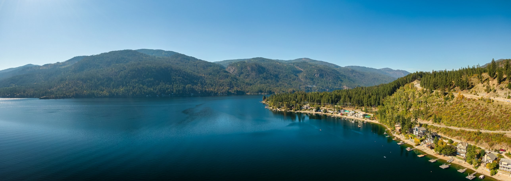

Engineering
Engineering & infrastructure
Engineering and infrastructure work supports water-related projects and long-term planning. Look for project-specific scope and status in official DEWR materials when available.

Confederated Salish and Kootenai Tribes
Find information about Tribal water rights, Compact implementation, water resource programs, engineering work, maps, documents, and public updates from the CSKT Division of Engineering & Water Resources.
Our Mission
The Division of Engineering & Water Resources supports the implementation of the CSKT-Montana Water Compact through water resource management, engineering, restoration, and planning that help protect Tribal waters for future generations.
Support long-term stewardship of Tribal water resources through planning, information, and coordinated resource work.
Explore resourcesConnect engineering and infrastructure planning with water resource needs and irrigation-related work.
View featured projectsShare information about restoration, fisheries, education, and responsible water resource management.
See our workOur Work
Learn about the areas of work that support water resource stewardship and CSKT-Montana Water Compact implementation. Project-specific details should be confirmed through official DEWR updates and publications.
Engineering
Engineering and infrastructure work supports water-related projects and long-term planning. Look for project-specific scope and status in official DEWR materials when available.
Water stewardship
Water resource management supports informed planning and long-term stewardship of Tribal waters.
Restoration
Restoration and fisheries-related work supports healthy water systems and habitats. Refer to official project materials for specific activities and updates.
Resources for the public
Compact implementation
Clear information helps Tribal members, water users, agencies, consultants, contractors, and other partners understand DEWR work and find relevant resources.
Find Information
Choose a topic to locate available guidance, forms, reports, maps, notices, and other information. For requirements that depend on your circumstances, use official CSKT guidance or contact DEWR.
Start with available information about Tribal water rights and the CSKT-Montana Water Compact. Check official CSKT materials for authoritative explanations of specific rights, processes, and requirements.
Browse available forms, technical documents, reports, public notices, and educational materials. Availability and requirements should be confirmed in the published source.
Use available maps and GIS resources to explore geographic information and project areas. Check each map’s source and date, and contact DEWR if you need help locating a dataset.
Featured Projects
Explore key areas of DEWR work, including engineering and infrastructure, irrigation modernization, restoration, planning, monitoring, and outreach. These cards describe work areas; consult official DEWR publications for named projects, locations, schedules, and current status.

Engineering
Engineering and infrastructure work related to water systems and community needs.
Explore project
Irrigation
Irrigation-related planning and modernization work that supports water delivery and agricultural needs.
Explore project
Restoration
Restoration and fisheries-related work focused on water systems and aquatic habitats.
Explore project
Water Planning
Planning that considers water resources, infrastructure, and long-term community needs.
Explore project
Monitoring
Monitoring and data resources can help inform understanding of river and stream conditions; consult published DEWR sources for available data and methods.
Explore project
Education
Educational materials and outreach help people learn about water resources, Tribal water rights, and Compact implementation.
Explore projectResources
Access documents, maps, public notices, educational materials, and other resources for water users and the public.
Find available forms and application resources related to water resource programs.
Browse technical documents, reports, and public information in one organized resource area.
Access available geographic resources, interactive maps, and project location information.
Explore educational resources and outreach materials about water resources and Tribal water rights.

Protecting Tribal water resources requires collaboration, informed decisions, and a long-term commitment to stewardship for future generations.
Stay Informed
Use official CSKT and DEWR channels for current announcements, public meeting information, reports, and project updates. Check publication dates and follow the instructions in each notice.
Read official notices carefully for dates, deadlines, meeting details, and any required next steps.
Access available reports, technical documents, and downloadable resources.
Explore available maps and geographic information resources.
Look for dated announcements and project information published through official CSKT channels.

Contact DEWR
For questions about DEWR programs, water resources, or a specific document or map, use the official CSKT contact channels to confirm the appropriate staff contact and current guidance.
Browse water rights information, forms, documents, maps, and public notices.
Frequently Asked Questions
Start with these general questions. Confirm specific legal, registration, or program requirements through official CSKT resources.
The CSKT-Montana Water Compact is central to the Tribes’ water resource implementation work. For authoritative background, legal terms, and implementation details, consult official CSKT publications and documents.
Begin with the Water Rights page, then review the available official guidance and supporting documents. If your question concerns a specific right or process, confirm the answer with CSKT.
Use the Resources section to locate available forms, reports, technical documents, and educational materials. Follow the instructions attached to each published item.
Review the work areas and available project information on this site, then check official CSKT notices and updates for dated announcements. The featured cards are work categories, not a live project-status list.